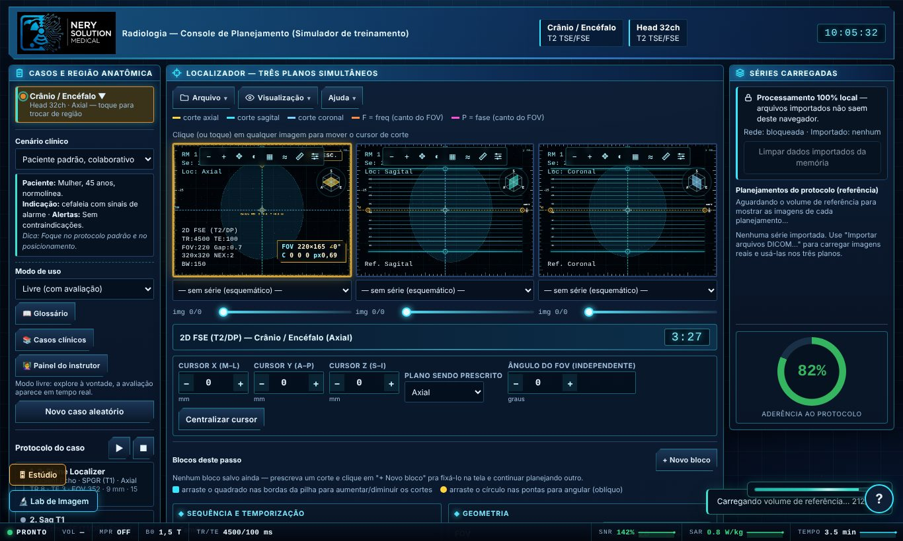
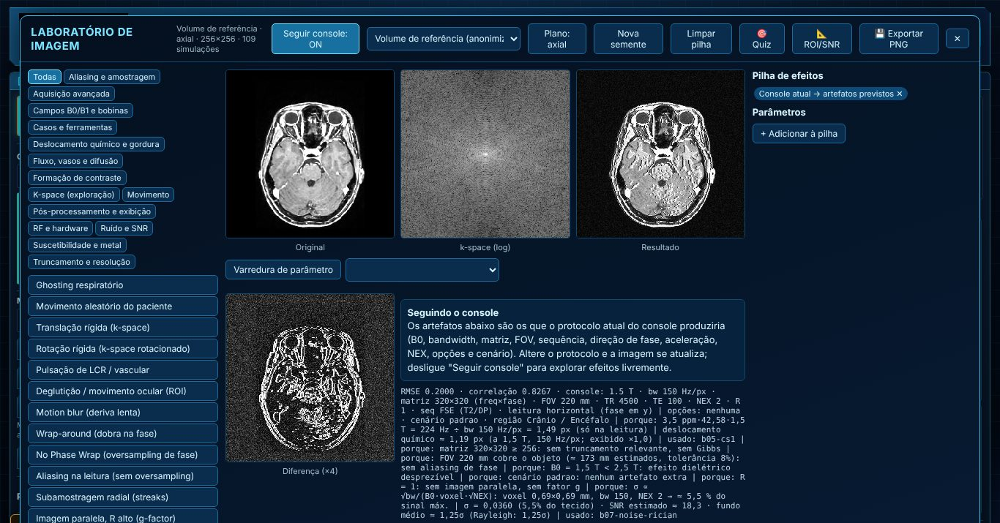
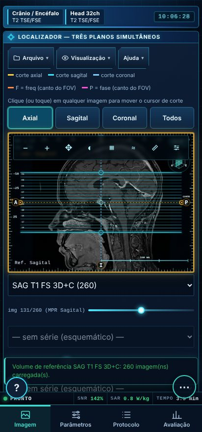

App educacional · Android e iPhone
Treine o planejamento de exames de ressonância magnética.
Um console de RM de bolso para estudantes e técnicos: prescreva cortes em três planos, ajuste parâmetros e veja o efeito na imagem. Funciona offline e processa tudo no seu aparelho.
Os links das lojas serão publicados aqui assim que o app estiver disponível. Dúvidas: Suporte.

O que você pratica
Planejamento em 3 planos
Axial, sagital e coronal com cursor cruzado, FOV, ângulo e prescrição oblíqua com alças.
Parâmetros avançados
NEX, largura de banda, aceleração, matriz de fase/frequência, concatenações, TR automático e setas de frequência/fase.
25 regiões anatômicas
Faixas de referência, protocolos e dicas explicativas (tooltips) para cada região.
Offline e privado
Sem conta, sem anúncios. Arquivos DICOM/ZIP que você importa ficam no seu aparelho.

Lab de Imagem
109 artefatos e efeitos de formação de imagem com demonstrações interativas: aliasing, ghosting, deslocamento químico, suscetibilidade, ruído e SNR, k-space, movimento e muito mais, com explicações de como reconhecer e como corrigir.
Simulação didática com física simplificada, não clínica.
Importe seus próprios cortes
Abra arquivos DICOM ou ZIP, navegue pelos cortes e use-os como localizador para treinar o posicionamento. Tudo é processado localmente. O Estúdio permite editar cortes, reformatar o volume, revisar tags DICOM e exportar.

Gratuito e Premium
Gratuito
Para conhecer o app, sem prazo.
- Crânio, Coluna lombar, Joelho e Ombro
- Console, 3 planos, prescrição oblíqua
- Importação DICOM local
Premium (assinatura)
Mensal ou anual, com 7 dias grátis para novos assinantes elegíveis.
- Protocolos, bobinas e geometria das outras 21 regiões
- Lab de Imagem (109 efeitos)
- Estúdio de Imagem/Dados
- Biblioteca de protocolos GE
O preço de cada plano é exibido na tela de assinatura, na moeda local, antes da confirmação. A assinatura renova automaticamente até ser cancelada, pelo menos 24 horas antes do fim do período, nas configurações da sua conta Google Play ou Apple. O teste grátis converte-se em cobrança se não for cancelado a tempo. Veja Termos e como cancelar.
Conteúdo educacional, com responsabilidade
O Simulador RM é uma ferramenta de ensino. Parâmetros, imagens e protocolos exibidos são exemplos de treino e não devem ser usados para decisões clínicas, nem substituem protocolos institucionais, manuais dos fabricantes ou normas de segurança em ressonância magnética.
Criado por Helio Nery, técnico em radiologia com mais de 15 anos de experiência em RM, pela Nery Solution Medical. Fale com a gente.